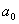
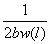
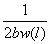
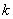
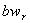
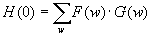
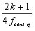
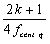
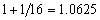

New bases for the processing of music in the time-frequency dominion
Author:
Juan Manuel Vuletich
Email: to jmvuletich@sinectis.com.ar
L.U.745/92
Director:
Dra. Ana M.C. Ruedin
Email: to anita@dc.uba.ar
Year 2005
Department of Computation
Faculty of Exact and Natural Sciences
University of Buenos Aires
Abstract ...................................................................................................................................................................................................
3
Summary ......................................................................................................................................................................................................
3
Introduction .........................................................................................................................................................................................
3
Signal .........................................................................................................................................................................................................
3
Analysis ...................................................................................................................................................................................................
4
Synthesis ....................................................................................................................................................................................................
4
Analysis/Resíntesis .........................................................................................................................................................................
4
Musical scale ..................................................................................................................................................................................
4
Location of signals in time and frequency .................................................................................................. 5
Teselado of the time plane - frequency .................................................................................................................... 6
Objective of the present work .................................................................................................................................................
6
Used tools ...........................................................................................................................................................
7
Conventional techniques for the time dominion - frequency .................................................................. 8
Ways to represent signals ..........................................................................................................................................
8
Transformed of discreet Fourier and transformed of Fourier ................................................................... 8
Wigner - Ville distribution .......................................................................................................................................................
10
Transformed of Fourier with window or transformed of Gabor .......................................................... 10
Transformed wavelet continuous and its discretización ....................................................................................... 11
Transformed wavelet discreet dyadic ................................................................................................................... 11
Wavelets M-ádicas .......................................................................................................................................................................
13
Bases optimized for each signal ................................................................................................................................
14
“Mosaic arbitrary of the time plane - frequency using local bases” (Bernardini/Kovacevic) ....................................................................................................................................................................................................................
14
Summary of Conventional Techniques ............................................................................................................................... 15
New wavelet discreet for music ....................................................................................................................... 16
Mosaic of the time plane - frequency ..................................................................................................................... 17
Description .........................................................................................................................................................................................
17
Parameters of the mosaic ...................................................................................................................................................................
18
Construction of the mosaic ...............................................................................................................................................................
18
Elementary functions ...............................................................................................................................................................
20
Adjustment of the elements of the base to the mosaic of the plane ........................................................................................................... 20
Wavelet ................................................................................................................................................................................................
20
Function of Scale .............................................................................................................................................................................
22
“Function of Cleared up Scale” ......................................................................................................................................................
23
Algebraic properties of the bases ............................................................................................................................. 25
Correlation between the elements .....................................................................................................................................................
25
Ortogonalización of the elements of different bands ........................................................................................................... 26
Ortogonalización of the elements of a same band ......................................................................................................... 26
Ortogonalización against displacements to uneven distances ............................................................................................ 27
Approach of the mosaic by rationals ...................................................................................................................................
28
Ortogonalización against displacements to even distances ................................................................................................ 28
Construction and final ortogonalización of the base .............................................................................................. 30
Obtained results ..................................................................................................................................................................
32
Conclusions .......................................................................................................................................................................................
35
Future works ..........................................................................................................................................................................
35
Glossary .................................................................................................................................................................................................
35
Bibliography .........................................................................................................................................................................................
36
Conventional techniques for
signal analysis and processing in the Time-frequency domain plows not
well adapted to digital processing of music signals. This restricts the
features and quality of applications. To novel family of wavelet-like
bases allows to tiling of the Time-frequency plane that is to better
adapted to the musical scale. Audio This will allow performance
enhancements in all kinds of digital applications, for example, pitch
detectors, sound identification, musical comedy instruments and effects
processors.
The conventional techniques for analysis and signal processing in the time dominion - frequency does not adapt well to the digital signal processing of audio, in music individual. This limits the possibilities and the performance of the applications. A novel family of pseudo wavelets allows to a mosaic of the plane of time - frequency better adapted to the characteristics of the musical scale. This will allow to improve the performance of all class of applications of audio, being able to be applied for example to converters of audio to MIDI (pitch detectors), identifiers of sounds, construction of musical instruments and, processors for recording studios.
In the area of the discreet signal processing the processing of musical sounds stands out, to have music properties particular, different from those of other types of signals (p. ej. images). The processing of music has important practical applications, that they go from the musical production (tools for musicians and engineers of recording), to products for consumers (equipment of music, software and applications for distribution and reproduction of music in personal computers).
Within the ample field of the processing of sound and music, this work is centered in techniques to transform the signals, expressing them in bases with certain wished properties. It interests to us to represent musical signals so that each coefficient expresses the power content of the signal in a small interval of time and frequencies. This allows to modify the signal, for example heightening or reducing to certain components (p. ej. musical notes), at certain moment.
Let us begin defining some terms, and their meaning (in the context of this work).
Signal
This work treats solely on discreet
signals unidimensionales that they correspond to segments of digitized
music. If the signals to use are muestreadas frequently of sampling and they do not contain energy in frequencies superior to
and they do not contain energy in frequencies superior to ,
then the theorem of Nyquist (Nyquist 1928, Shannon 1949) guarantees
then that the original signals can perfectly be reconstructed. As it
will be seen more ahead, a signal of finite duration cannot fulfill the
hypothesis of the theorem. A phenomenon called aliasing when
reconstructing appears then, but
,
then the theorem of Nyquist (Nyquist 1928, Shannon 1949) guarantees
then that the original signals can perfectly be reconstructed. As it
will be seen more ahead, a signal of finite duration cannot fulfill the
hypothesis of the theorem. A phenomenon called aliasing when
reconstructing appears then, but she
is sufficiently high, aliasing can be ignored. This happens in compact
disc and all the digitalis formats audio: the recordings last finite.
she
is sufficiently high, aliasing can be ignored. This happens in compact
disc and all the digitalis formats audio: the recordings last finite.
Analysis
To analyze signal consists of to apply algorithm that extracts information in form of parameters, that turn out useful to describe it, or to know some aspect her. For example, vúmetro (that shows the intensity of the signal throughout the time), or an analyzer of phantom (that shows the evolution of the frecuencial content throughout the time).
Synthesis
To synthesize a signal consists of generating a signal from certain parameters. For example, a sintetizador of music generates sounds based on parameters like the note to touch, intensity, stamps, etc.
Analysis/Resíntesis
Analysis/Resíntesis, or Processing in the Transformed Dominion is to apply one transformed reversible one, to extract parameters, to operate on them and to synthesize a new signal related to the original one (but probably nonidentical).
Examples of this are the equalization, the processing of dynamic range by bands (like the Dolby system), the techniques used by the engineers of recording to mix and to make the final adjustments for discs (masterización), or the data compression. To work in the transformed space allows to choose a base of representation of the signal in which they can obtain the looked for effect manipulating coefficients just a few; facilitating itself to know which are the excellent coefficients, and how to modify them. To express the signal in a space of this type allows some of the following applications:
· Eliminar coefficients, to eliminate noise.
· To multiply them by factors, or curves in the time or the frequency (to heighten or to eliminate certain components).
· Modificar coefficients (that were perhaps zero) to enrich the timbre.
· To regroup them or to disturb them (to separate sounds and to process them separately).
· Cuantizar and/or to eliminate coefficients, to save storage space (data compression).
Musical scale
The chromatic musical scale used by all old western music is descending of the Pythagorean scale of the Greeks. The construction of the scale is based on several characteristics of the human system auditory that occur when combining sounds of defined height.
First it is the form in which our ear interprets the altitude difference between two listened to sounds one after the other. For example, the altitude difference which we perceived between a sound of 100Hz and one of 200Hz is the same one that the one that we perceived between a sound of 400Hz and one of 800Hz. (Hertz is the abbreviation of Hertz, the standard unit of frequency. Hertz is equivalent to a cycle per second.) This relation occurs between two sounds that have the one double of frequency that the other, and the flame eighth.
On the other hand, if two (or more) sounds sound in unison, we say that they form an agreed one. If the frequencies of the sounds are next, or one she is next to a multiple whole number of the other, appear “the beaten” calls, I pretend fluctuations in the intensity of the perceived sound, that must both to a phenomenon of interference between original sounds. This happens when the difference of frequencies is between 1 and 15Hz. This effect takes advantage of the tuner pianos, who sharpens each cord being based on just sharpened, looking for to make disappear the milkshakes when they sound meetings.
If the frequencies of the sounds that form the agreed one are next, but not as much (its difference is greater to 20Hz), it appears the dissonance. The frequency of appearance of the milkshakes is the difference of frequency between the sounds. When this difference is greater to 20Hz, its frequency of appearance is audible, and the milkshakes are based generating a new timbre. Then we listened to a harshness sensation. It is easy to feel the dissonance simply pressing several neighboring keys of a piano with the fist.
Finally, when the reasons between the frequencies of the sounds of the agreed one are fractions with denominating numerator and small, we listened to a consonancia. The oscillations of the different sounds agree each few cycles, forming a periodic signal. The sounds are based on only one, and the result is pleasant to the ear. Examples of this are the used intervals more in music: the third greater one (5/4), the fourth perfect (4/3) and fifth perfect one (3/2).
The first point before exposed shows to us
that the progression of the frequencies of notes is not linear but
logarithmic. Looking for useful frequencies to generate consonancias,
the “scale of greater right intonation” had 7 notes by eighth,
constructed like simple fractions of a fundamental note (arbitrary)
with the following sequence: 1, 9/8, 5/4, 4/3, 3/2, 5/3, 15/8, 2. This
scale evolved later until the present temperada chromatic scale, spread
by J.S. Bach in century XVII, and that has 12 notes or halftones by
eighth, with the following reasons between the frequency of each note
and a note bases arbitrary: 1, ( ) 2, (
) 2, ( ) 3, (
) 3, ( ) 4, (
) 4, ( ) 5, (
) 5, ( ) 6, (
) 6, ( ) 7, (
) 7, ( ) 8, (
) 8, ( ) 9, (
) 9, ( ) 10, (
) 10, ( ) 11, 2.
These irrational approaches of the simple fractions generate
milkshakes, but the approaches are sufficiently good like so that the
average ear it does not detect them. The reason to leave the “right
intonation” (simple fractions) and to replace it by irrational
approaches was to be able to construct instruments of fixed refining
(for example of keyboard, like the key or the piano) that could be
called on in scales based on anyone of notes with no need to introduce
notes with different frequencies for each scale. The tuner of pianos
balances the milkshakes in all the pairs of notes, and of that way he
constructs the temperada scale. (For more details,], [NUÑ/92], or any
good book of Musical Theory or Engineering of Sound are advised to
consult [OLS/67.)
) 11, 2.
These irrational approaches of the simple fractions generate
milkshakes, but the approaches are sufficiently good like so that the
average ear it does not detect them. The reason to leave the “right
intonation” (simple fractions) and to replace it by irrational
approaches was to be able to construct instruments of fixed refining
(for example of keyboard, like the key or the piano) that could be
called on in scales based on anyone of notes with no need to introduce
notes with different frequencies for each scale. The tuner of pianos
balances the milkshakes in all the pairs of notes, and of that way he
constructs the temperada scale. (For more details,], [NUÑ/92], or any
good book of Musical Theory or Engineering of Sound are advised to
consult [OLS/67.)
Location of signals in time and frequency
The signals can imagine of diverse ways, considering them vectors and using different bases from vectorial spaces. The usual temporary representation uses the canonical base. Another fundamental representation is the frecuencial, obtained by means of the transformed one of Fourier, and who uses a base formed by sines and cosines of different frequencies.
The principle of uncertainty of Heisenberg is a theorem on certain pairs of mathematical operators. In quantum mechanics it is applied to the position and moment of any particle. In signal processing it is applied to the temporary and frecuencial representation of any signal. Both are particular cases of pairs of operators who fulfill the hypotheses of the theorem. In quantum mechanics, it means that it is not possible to determine simultaneously the position and speed (or position and energy) of a particle. In signal processing, the uncertainty principle establishes a level to the location in the time and the frequency of any signal. This means that if looks for to most of concentrate the energy of the signal in a possible the most reduced interval of time and in a possible the most reduced interval of frequency, an improvement in a dominion implies a loss in the other.
Additionally, to have compact support in one of the dominions (time or frequency) implies to have infinite support in the other. That is that is not possible to construct a signal that is different from only zero in a time interval, and that their frecuencial content is different from only zero in an interval of frequencies. This property is applied so much to continuous signals as discreet. For more details [STR/97a is seen], p.67 and p.432.
Teselado of the time plane - frequency
He is usual to work with the time plane -
frequency, that expresses the time in the horizontal axis and the
frequencies in the vertical. As it is dealt with digitized signals, the
interval of frequencies to consider is limited. Normally it is spoken
of the time plane - frequency, although in fact works with muestradas
signals and a subgroup of the plane (a horizontal band that includes
the frequencies between 0 and ).
A partition becomes then of this plane in small portions, all of equal
area, called teselado, tiled or mosaic (in English “tiling”). To each
teselado one corresponds (or more) bases or forms to represent signals.
And to each floor tile a coefficient in that representation of a signal
corresponds. In all the cases, for a certain sampling fraction, the
amount of floor tiles by time unit is the same one. This allows to
maintain constant the amount of coefficients to use to represent the
signals, requirement for the existence of bases. When it express a
signal in a base whose elements adapt to a mosaic of the plane, the
frequency is said that express in the time dominion -. Many usual forms
to represent the signals can see like mosaics of the time plane -
frequency. Some of these are the temporary representation, the discreet
transformed one of Fourier, transformed of Fourier with window (or
transformed of Gabor) and transformed wavelet discreet.
).
A partition becomes then of this plane in small portions, all of equal
area, called teselado, tiled or mosaic (in English “tiling”). To each
teselado one corresponds (or more) bases or forms to represent signals.
And to each floor tile a coefficient in that representation of a signal
corresponds. In all the cases, for a certain sampling fraction, the
amount of floor tiles by time unit is the same one. This allows to
maintain constant the amount of coefficients to use to represent the
signals, requirement for the existence of bases. When it express a
signal in a base whose elements adapt to a mosaic of the plane, the
frequency is said that express in the time dominion -. Many usual forms
to represent the signals can see like mosaics of the time plane -
frequency. Some of these are the temporary representation, the discreet
transformed one of Fourier, transformed of Fourier with window (or
transformed of Gabor) and transformed wavelet discreet.
In many cases, the plane is divided in a set of horizontal strips, each one of a floor tile of wide, and many floor tiles of length. These strips denominate “analysis bands”.
As it were already said, it is theoretically impossible simultaneously to obtain a function with compact support in the time and the frequency. This means that the only mosaics of the plane, for which it is possible to obtain bases that adjust exactly to them, are those that divides to the plane only in time (like the temporary representation) or only in frequency (transformed of Fourier and the cosine).
In all the representations that try temporary and frecuencial location, in fact each element of the base occupies many (in fact, infinite) floor tiles, and they are solely trims in a floor tile in which they concentrate its energy most of. In addition, when improving the concentration of the energy in a dominion gets worse it in the other. This means that we can choose to respect better the location in a dominion, without modifying the mosaic, but affecting the location in the other dominion.
Objective of the present work
In general, the most modern and successful techniques to represent signals in the time dominion - frequency uses wavelets. For example, in Image processing, the discreet bases wavelets (dyadic) have been used with great success in analysis (detection of edges and objects, classification of textures, etc.) and in processing (for example in compression, surpassing to the DCT, or discrete cosine transform used by the standard JPEG).
Nevertheless, in musical signals, and of sound; the bases constructed with wavelets discreet have not been he himself successful. For analysis (where characteristics of the signal study, but it is not tried to reconstruct it), transformed wavelet continuous discretizada gives the best results. Nevertheless, for the processing, wavelets discreet has not been an improvement as opposed to older techniques. For example, the most successful technique of compression of audio (format MP3) uses the MDCT, or modified discrete cosine transform; and most of the applications of music production they use variations of the STFT. Discreet the attempts to use wavelets instead of them have not rendered fruits. One thinks that this happens because the wide one of each band of analysis cannot adjust appropriately to the characteristics of music (v.g the musical notes).
The objective of this work is to present/display bases pseudo wavelet of the space of muestreadas signals l2 (Z) that are from utility for the treatment of musical sounds. The coefficients to represent a signal in these bases will be located in the time and the frequency. This means that if the signal is reconstructed, modifying previously the value of a coefficient, then the effects of this modification will be limited a short temporary interval, and only to a rank of frequencies. Reversible one to the time plane appears then one transformed - frequency, that adapts to a mosaic of the plane designed from the musical scale.
In relation to the conventional dyadic discreet restrictions of wavelets, in [TOR/99], p 22, Torresani says: “The connection between continuous and discrete wavelet systems is not completely understood. … The multirresolution approach seems to be also extremely constrained by algebraic arguments, which should be developed to further.” (“The connection between the discreet and continuous systems of wavelets is not included/understood totally. … The approach multiresolution seems in addition to be extremely restricted by the algebraic arguments, that must be developed still more. ”). And in [DAU/92], p 16, Daubechies say: “Although the constructive method for orthonormal wavelet bases, called multirresolution analysis, rational dog work only if a0 is, it is an open question to whether there exist orthonormal wavelet bases (necessarily not associated with to multirresolution analysis), with good Time-frequency localization, and with irrational a0.” (“Although the constructive method for ortonormales bases wavelet, call analysis multiresolution, only can work S.A. (the reason between the wide one of 2 neighboring bands) is rational, is an open question if ortonormales bases exist wavelet (necessarily not associated with an analysis multiresolution), with good irrational temporary and frecuencial location, and with a0. ”). It is also remarkable that in the cover of [STR/97a] appears pentagrama musical with several notes, like metaphor from wavelet dyadic. But of 12 possible notes, it only appears the Do note in 5 eighth different ones. That is, notes whose frequency is 2if0 for some f0 with whole i. This only already suggests the urgent necessity to generalize the technique to be able to also represent other notes of the scale!
Being in agreement with these authors in
the necessity of new more general approaches, this work does not use
the classic method to construct wavelets discreet (the call “analysis
multiresolution”, or MRA), but that works directly with explicit bases
represented like vectors column in matrices, looking for new bases of l2 (Z), with the wished characteristics (good frecuencial location, and a0 = ).
The cost is a consumption greater of memory and processor in the
computers (to store the complete matrix, and to solve the system of
linear equations associated), but the advantage is a greater freedom to
look for the wished bases. As result bases are constructed that are not
strictly wavelets (that is that is not transferings and expansions of
an only basic function). The result of this discreet work is a new
family of pseudo wavelets that promises to be more appropriate for
musical applications.
).
The cost is a consumption greater of memory and processor in the
computers (to store the complete matrix, and to solve the system of
linear equations associated), but the advantage is a greater freedom to
look for the wished bases. As result bases are constructed that are not
strictly wavelets (that is that is not transferings and expansions of
an only basic function). The result of this discreet work is a new
family of pseudo wavelets that promises to be more appropriate for
musical applications.
Used tools
In order to carry out east work, the atmosphere of programming Squeak Smalltalk was used (www.squeak.org). It is an atmosphere OO pure, tensile and of open source (they open source). A set of classes for treatment of matrices was implemented and bases of R N. Also the support necessary was implemented to graficar functions and vectors, and to study its properties.
Ways to represent signals
As it were already said, the signals to represent are successions withfinite, and the space to which belongs denominates l2 (Z). The different forms in that the signals can be represented are the different bases that the space l2 (Z) admits.
Of the conventional techniques for analysis and signal processing in
the time dominion - frequency, those that are transformed reversible
correspond to bases of this space, and provide different tiled mosaics
or from the time plane - frequency.
withfinite, and the space to which belongs denominates l2 (Z). The different forms in that the signals can be represented are the different bases that the space l2 (Z) admits.
Of the conventional techniques for analysis and signal processing in
the time dominion - frequency, those that are transformed reversible
correspond to bases of this space, and provide different tiled mosaics
or from the time plane - frequency.
The first base to consider is the canonical base. The elements of this base are vectors of infinite dimension with an only element different from zero, that has value one. The musical signals are expressed normally in this base, for example in a compact disc of audio, or in file formats of audio simple, like wav and the AIFF. The canonical base can be seen like a possible mosaic of the plane:
In this figure (and the 3 following ones)
x-axis corresponds to the time and the axis and the frequency. Let us
consider a signal of N = 128 samples (real). One is to a temporary
interval of N samples, and frequencies from zero to the Maxima
representable (that iswhere it
is the used frequency of sampling). The time plane - frequency is
divided in vertical strips. Each element of the base includes all the
representables frequencies, and a minimum temporary interval. The
temporary resolution is Maxima (and it is of 1/
it
is the used frequency of sampling). The time plane - frequency is
divided in vertical strips. Each element of the base includes all the
representables frequencies, and a minimum temporary interval. The
temporary resolution is Maxima (and it is of 1/ ), the frecuencial resolution is null.
), the frecuencial resolution is null.
Next some of the conventional techniques are described, showing that those that is useful for the analysis are not good for the processing, and those that is applicable to the processing they present/display other disadvantages. A detailed description of each one will be avoided excessively, for being all of them you decipher in Literature in exhaustive form.
Transformed of discreet Fourier and transformed of Fourier
The transformed one of Fourier (FT) is the technique of older frecuencial representation, and has some important problems, but also it has virtues that some of which they appeared later lost.
One reversible one is transformed. Its discreet version (DFT) considers a signal of muestreada finite duration. This implies that the frequencies are discretizadas and that the interval of possible frequencies is limited. The DFT generates a new representation of the signal that uses the same amount of coefficients that the original one, and is nonredundante. Therefore it generates a base of the space of the represented signals. As it separates the frequencies, frequency generates a mosaic of the time plane -. It is deciphers, for example, in [ESP/02].

Now we have N/2 = 64 strips horizontal,
all of equal wide, and as long as the signal. This means that we have
frecuencial resolution Maxima (2 /N)
equal in all the bands, and null temporary resolution. We represented
then the signal with half of the coefficients (N/2), but are complex
coefficients, and the amount of information is the same one.
/N)
equal in all the bands, and null temporary resolution. We represented
then the signal with half of the coefficients (N/2), but are complex
coefficients, and the amount of information is the same one.
Well it is known that the main disadvantage of the transformed one of Fourier is the complete lack of temporary location of the obtained components. The frecuencial resolution is the Maxima possible, but to the supposition that the temporary signal is periodic, it is also considered that all the components are present at any moment. On this problem, J. Ville (that proposed the use of the Wigner - Ville Distribution as a “temporary density - frecuencial”) said (to see [TOR/99], p 1):
“… the representation is
mathematically correct because the phases of the tones close to To have
managed to suppress it by interference phenomena before it is heard,
and to enforce it, again by interference, when it is heard… However
this is to deformation of reality: heard when to is not, it is simply
because it there are not been played yet…”
(“The representation is mathematically correct because the phases of the tones near A (one note that sounds at a certain moment) are successful in suppressing it by means of interference phenomena before is listened to it, and to reinforce it, again by interferences, when listening… If embargo, this is a deformation of the reality: When the note is not listened to, it is simply because still it was not touched…”.)
This means that they appear component espúreas that they partially cancel to other components, but in fact neither they nor the component to cancel would have to appear. This type of phenomena obstructs the analysis, because it suggests the existence of characteristics in the signal that in fact do not exist.
The application of the DFT presents/displays an additional disadvantage actually, consequence to suppose that the signal is stationary (periodic), and that the transformed segment corresponds to an exact amount (it finds out) periods of the same one. If this supposition is false (actually it is it almost always), the obtained result is the transformed one of a different signal: a periodic signal obtained concatenating an infinite amount of repetitions of the transformed segment. This problem appears because many implementations of the FFT (transformed fast of Fourier, an algorithm that calculates the DFT) require that the signal has size 2n for some whole n, and what it becomes is to trim the signal (taking a nonwhole amount from periods) or to complete it with zeros. Also it happens because many applications divide the signal of entrance in segments of an arbitrary size (to process the segments), without making no consideration of the signal in individual that is being processed at every moment. Anyway, with choosing better the size of the segment to transform it is not sufficient: the entrance signal normally is not periodic. It is in these cases where a purely frecuencial representation is not appropriate. The frecuencial content of the signal is changing with time. A representation in time is precise - frequency. These problems, often ignored actually, can take to obtain completely erroneous results. For more details, [BRI/88 is seen], p.98 to 107.
Wigner - Ville distribution
The Wigner - Ville distribution (WVD) dates from 1948 and is historically is the first technique that it looks for to obtain data on a signal, obtaining simultaneously temporary and frecuencial location. She was propose by J. Ville like a “frecuencial temporary density”. When is applied it to pure oscillations, it provides an optimal location. Good behavior also stays to signals that are certain simple transformations of an only pure oscillation (p. ej. chirps linear). But more complex signals appear problems when analyzing, for example the sum of simple signals. In these cases the result is not the sum of the WVD of those, but that appear “terms of interference”. Really, the WVD is not linear. In [TOR/99] is one more a detailed description, and are examples where the alinealidad is in evidence.
Versions exist continuous and discretizaciones (necessary to work in a computer) which they serve for the analysis (with different particularitities in each case), but do not allow the reconstruction of the signal.
In [NEW/97] becomes a comparison between the discretizada WVD, the STFT and the discretizada CWT applying them to the analysis; concluding in the advantages of the CWT on the other methods.
Transformed of Fourier with window or transformed of Gabor
The continuous transformed one of Gabor or transforming of Fourier with window (STFT), and their discreet version, is technical to equip with temporary location the transformed one of Fourier. ], [DAU/92] and [ESP/02 are described in [TOR/99].
The continuous transformed one one is transformed reversible one between L2 (R) and L2 (R2). Actually discretizadas versions are used always.
An only temporary window for the analysis in all the bands is used. This means that the temporary resolution and the frecuencial resolution are constant, and cannot adjust to create bands of different wide. The result of this is a mosaic of the time plane - frequency with all the rectangular and identical floor tiles, forming a drawn into squares species of. The STFT is a redundante representation, but representations exist that share many of their properties, and that are bases. One of the most used is the transformed MDCT or of the modified cosine, used by the method of compression of audio MP3.
These representations present/display other disadvantages. Within a window problems similar to those of the DFT occur, because it is considered that (within the window) the signal is stationary (periodic). This means that if appears component whose frequency is not multiple as large as the window, they appear component espúreas in the result. This problem often occurs when using the DFT and it was already commented. The different alternatives for the window try to palliate this problem (with certain success). Also they appear problems if in the search of a frecuencial resolution good, appropriate to identify low frequencies (serious sounds), great temporary windows are taken. When being used the same window for the high frequencies, is possible that very short sounds do not get to identify themselves appropriately, worsening the problems that share with the transformed one of Fourier.
In [NEW/97] becomes a comparison between the discretizada WVD, the STFT and the discretizada CWT applying them to the analysis; concluding in the advantages of the CWT on the other methods.
Transformed wavelet continuous and its discretización
Transformed wavelet continuous (CWT) was propose by Grossman and Morlet like alternative to the transformed a continuous of Gabor, and is described in [TOR/99]. One continuous one to the time dominion is transformed - frequency. An only function is taken, call wavelet, that most of contains its energy located in a temporary interval and a frecuencial interval. The first election is the call wavelet Morlet, one Gaussian one modulated, by its optimal location in the time and the frequency. In [DAU/92], p.76 is a description, in the context of the redundantes discretizaciones called “frames” (that do not form bases) of the continuous transformed one. This wavelet is transferred in the time and simultaneously expanded (that is transferred in the frequency). Each scale or expansion modifies the frequency in which the phantom is centered, and then each expansion is associate to “a central” frequency. The transformed one measures for every moment and each frequency (and its corresponding expansion) the correlation between the original signal and wavelet transferred and expanded.
In the implementations for computers, discretiza time and scale. How fine it must be the sampling in each axis depends on the application, but also it must adjust carefully to the characteristics of temporary and frecuencial location of wavelet selected. A map of the distribution of the energy of the signal in the time and the frequency is constructed therefore, with very good resolution, approaching at the beginning of uncertainty of Heisenberg. In certain [NEW/97] describes wavelets developed for the analysis using the CWT, Harmonic Wavelets calls (Harmonic Wavelets).
Eligiendo adecuadamente la wavelet, es posible ajustar la representación a la escala musical. De cualquier manera, estas técnicas son útiles para el análisis pero no para el procesamiento, porque las discretizaciones entregan representaciones muy redundantes de la señal. Si bien esto no impide la reconstrucción, dificulta el procesamiento en el dominio de tiempo – frecuencia, porque al haber redundancia, distintos conjuntos de coeficientes generarán la misma señal, y no resultará fácil determinar qué manipulación de los coeficientes es la que hay que hacer para obtener un resultado en particular. Por ejemplo, un muestreo excesivamente fino del plano de tiempo – frecuencia sugiere que sería posible reconstruir una señal afectando un intervalo temporal y frecuencial extremadamente pequeño, menor que el límite impuesto por el principio de incertidumbre. Es claro que los resultados decepcionarán al usuario: la magia no existe. Esta técnica está descripta en [ESP/02] y [NEW/97]. En [NEW/97] se hace una comparación entre la WV discretizada, la STFT y la CWT discretizada aplicándolas al análisis; concluyéndose en las ventajas de la CWT sobre los otros métodos. En [OLM/99] se detalla una aplicación al análisis de música y reconocimiento automático de melodías. En este trabajo se introduce una familia de wavelets continuas especialmente adaptadas al análisis de música llamada wavelet Log-Morlet.
Transformada wavelet discreta diádica
Las transformadas wavelet discretas usuales (DWT diádicas, o DDWT) no son una discretización de las CWT.
Se utilizan dos funciones fundamentales
continuas: la función de escala  y la wavelet
y la wavelet  . Como primer paso, se toma una cierta función de escala
. Como primer paso, se toma una cierta función de escala  . La propiedad principal de esta función es que desplazándola
por múltiplos enteros de cierto
. La propiedad principal de esta función es que desplazándola
por múltiplos enteros de cierto  forman una base
ortogonal de ciertos subespacios de L2(R). En particular, pueden representarse funciones constantes,
lineales, y en algunos casos cuadráticas y polinómicas de grados mayores.
Llamemos a este espacio V0. Consideremos ahora la función
forman una base
ortogonal de ciertos subespacios de L2(R). En particular, pueden representarse funciones constantes,
lineales, y en algunos casos cuadráticas y polinómicas de grados mayores.
Llamemos a este espacio V0. Consideremos ahora la función  , que es
, que es  dilatada por un
factor 2:
dilatada por un
factor 2:  (x)=
(x)= (x/2). Los desplazamientos de
(x/2). Los desplazamientos de  forman una base de un espacio llamado V-1. Ahora
entra en escena
forman una base de un espacio llamado V-1. Ahora
entra en escena  .
.  , y sus desplazamientos por múltiplos enteros de 2 forman una base de un
espacio llamado V-1. Por la forma en que se construyen
, y sus desplazamientos por múltiplos enteros de 2 forman una base de un
espacio llamado V-1. Por la forma en que se construyen  y
y  (para ser utilizadas
juntas) resulta que V0 = W-1 Å V-1. Esto puede repetirse, obteniendo
(para ser utilizadas
juntas) resulta que V0 = W-1 Å V-1. Esto puede repetirse, obteniendo  y
y  tales que V-1 =
W-2 Å V-2. O sea, V0 = W-1Å (V-2 Å W-2). Repitiendo esto k
veces, tenemos V0 = W-1 Å ( ... Å (V-k
Å W-k)).
tales que V-1 =
W-2 Å V-2. O sea, V0 = W-1Å (V-2 Å W-2). Repitiendo esto k
veces, tenemos V0 = W-1 Å ( ... Å (V-k
Å W-k)).
El cálculo de la transformada consiste en
partir de una secuencia de coeficientes que corresponden a la función contínua
original, pero expresada en la base formada por desplazamientos de  . Entonces, por convolución con dos filtros (asociados a
. Entonces, por convolución con dos filtros (asociados a  y
y  ) y submuestreo, se expresa la señal en la base formada por
) y submuestreo, se expresa la señal en la base formada por  y
y  . Esto se repite para los coeficientes de
. Esto se repite para los coeficientes de  , para expresar la señal en la base formada por
, para expresar la señal en la base formada por  , y
, y  . Esto se repite k veces, y la señal queda expresada en la
base formada por
. Esto se repite k veces, y la señal queda expresada en la
base formada por  , ...
, ...  y . La antitransformada es revertir todos los pasos usando dos
filtros apropiados, y sobremuestreo intercalando ceros.
y . La antitransformada es revertir todos los pasos usando dos
filtros apropiados, y sobremuestreo intercalando ceros.
Para aplicar esta transformada a señales discretas en vez de funciones continuas, la secuencia de coeficientes inicial es directamente la señal a transformar. Esto debe tenerse en cuenta el elegir la wavelet a utilizar.
Estas técnicas evitan el costo de almacenar las bases de los distintos espacios; y son muy eficientes en el cálculo: si la cantidad de bandas k es constante, tenemos O(n) con n el tamaño de la señal.
Si las propiedades de localización
temporal y frecuencial de  y
y  son apropiadas, el resultado es un mosaico del plano como el
que se muestra en la figura, donde las bandas de frecuencias más altas tienen
mejor resolución temporal y aquellas correspondientes a las frecuencias más
bajas tienen mejor resolución frecuencial.
son apropiadas, el resultado es un mosaico del plano como el
que se muestra en la figura, donde las bandas de frecuencias más altas tienen
mejor resolución temporal y aquellas correspondientes a las frecuencias más
bajas tienen mejor resolución frecuencial.
Los elementos de la base y los coeficientes son reales. Para representar una señal de N muestras temporales se usan N coeficientes.
Como ya dijimos, las representaciones son no redundantes y generan bases. Son entonces transformadas invertibles. La localización temporal y frecuencial depende de la wavelet utilizada, pero en ningún caso será mejor que una octava. Esto significa que cada banda abarca al menos 12 notas de la escala.

En esta figura se muestra el mosaico correspondiente
a una base construida con 6 bandas o dilataciones de la wavelet, y la función
de escala. Tenemos de nuevo 64 baldosas de igual área. La resolución
frecuencial es de una octava: cada banda  de frecuencias va
desde cierta
de frecuencias va
desde cierta  hasta
hasta  y abarca un ancho
(“bandwidth”)
y abarca un ancho
(“bandwidth”)  , la resolución temporal (y la longitud de cada baldosa) es , y mantiene la cantidad de baldosas y las áreas iguales a las
de la base canónica. La resolución temporal mejora para frecuencias altas, y
empeora para frecuencias bajas. Esto resulta deseable para procesar sonido,
pero el inconveniente es que nuestro oído tiene una resolución frecuencial
mucho mejor que una octava (y una resolución temporal más pobre, porque nuestro
oído también debe respetar el principio de incertidumbre de Heisenberg).
, la resolución temporal (y la longitud de cada baldosa) es , y mantiene la cantidad de baldosas y las áreas iguales a las
de la base canónica. La resolución temporal mejora para frecuencias altas, y
empeora para frecuencias bajas. Esto resulta deseable para procesar sonido,
pero el inconveniente es que nuestro oído tiene una resolución frecuencial
mucho mejor que una octava (y una resolución temporal más pobre, porque nuestro
oído también debe respetar el principio de incertidumbre de Heisenberg).
Adicionalmente debe tenerse en cuenta que cambiar la elección de la wavelet afecta la localización temporal y frecuencial de los elementos, modificando la forma en que se ajustan al mosaico del plano; pero el mosaico es siempre el mismo. Esto ocurre incluso con las wavelets discretas de Daubechies, que tienen soporte frecuencial muy amplio, y soporte temporal compacto pero siempre mayor que una baldosa. En aplicaciones en las que interesa especialmente el teselado del plano es importante utilizar wavelets que se ajusten a cada baldosa lo mejor posible.
Esta técnica está descripta en detalle en [DAU/92], [STR/97a], [STR/97b], [TOR/99] y [ESP/02].
Wavelets M-ádicas
Las Wavelets M-ádicas son una generalización de la DWT diádica, y permiten mayor flexibilidad en el balance entre resolución temporal y frecuencial. Generan mosaicos del plano.
Las wavelets M-ádicas buscan incrementar la resolución frecuencial a costa de la resolución temporal. Esto es deseable, pero la manera en que lo hacen es en cada iteración del algoritmo dividir el espectro disponible en m bandas de igual ancho. Luego, se repite el procedimiento sobre la banda inferior recién generada. Esto se repite sucesivamente tantas veces como se desee (y permita la longitud de la señal). Las traslaciones y submuestreos aplicados son siempre enteros. Por esta razón no es posible obtener el balance entre resolución temporal y frecuencial necesario, por ejemplo, para analizar los tonos de una señal musical.

El ejemplo muestra el mosaico correspondiente a m = 4, iterando el algoritmo 3 veces. Tenemos otra vez 64 baldosas de igual área que en la canónica. Tenemos bandas vecinas de igual ancho, y también vemos bandas vecinas donde una tiene el un ancho m veces mayor que la otra. Nuestro oído no funciona de esta manera.
Al igual que en las DWT diádicas, la elección de la wavelet afecta la localización temporal y frecuencial de los elementos de la base, y su ajuste al mosaico, sin modificar el mosaico en sí.
Bases optimizadas para cada señal
Existen diversos trabajos publicados e investigación en curso sobre el problema de elegir una base especialmente adaptada a la señal a representar. El objetivo buscado es elegir una base que permita minimizar la cantidad de coeficientes necesarios para representar cierta señal. La base se arma eligiendo elementos de un diccionario de elementos.
Entre las técnicas de este tipo podemos citar “Matching Pursuit” (S. Mallat y Z. Zhang), “Best Basis” (R. Coifman y V. Wickerhauser) y “Basis Pursuit” (D. Donoho). Están descriptas someramente en [STR/97a], pág. 85.
Estas técnicas generan bases. Son entonces transformadas invertibles. Sus principales aplicaciones incluyen el análisis de señales, y la compresión; pero no el procesamiento en general. La razón de esto es que las bases de este tipo carecen de “ecuanimidad” y favorecen la reconstrucción de ciertas señales (las que se ajustan mejor a la base). Entonces se condiciona el tipo de operaciones que resulta más fácil aplicar. Por ejemplo, de usarse para construir un ecualizador (que permite ajustar el nivel del sonido en bandas de frecuencia), tendríamos un ecualizador cuyas bandas cambian según la señal y entonces permiten distintos tipos de ecualización para distintos tipos de señales.
“Mosaicos arbitrarios del plano de tiempo - frecuencia usando bases locales” (Bernardini / Kovacevic)
En el artículo con este nombre (“Arbitrary Tilings of the Time-Frequency plane using local bases”), ([BER/99]) Bernardini y Kovacevic desarrollan una interesante técnica para obtener bases ortogonales que aproximan cualquier mosaico del plano de tiempo - frecuencia. El resultado es realmente novedoso y prometedor. El problema atacado es similar al de este trabajo, pero es aún más general.
En vez de restringirse a mosaicos del
plano donde cada banda tenga un ancho de banda relativo constante, como la
escala musical; permiten prácticamente cualquier mosaico del plano. La manera de
especificar el mosaico deseado es la siguiente: si tenemos una señal de N
muestras, sabemos que podemos representarla en una resolución máxima de N
instantes (representación temporal) o una resolución máxima de N/2 frecuencias
(utilizando coeficientes complejos en el dominio de Fourier, sabiendo que las
señales son reales). Dividamos el plano (acotado en tiempo y frecuencia a la
señal y al muestreo) en N/2 franjas horizontales y N franjas verticales.
Tenemos una grilla con N2/2 elementos, y sabemos que es imposible
tener una representación con tanta resolución. Sabemos que cualquier área
rectangular formada por N/2 elementos de la grilla se ajustará al principio de
incertidumbre (permitiendo utilizar bases y coeficientes reales). Esto es
justamente lo que esta técnica nos permite hacer. Podemos especificar cualquier
conjunto de N baldosas, cada una formada por N/2 elementos de la grilla, tales
que formen una partición del plano (que no haya superposiciones ni huecos), y
la forma de cada baldosa resulte rectangular. Vemos entonces que el ancho
(intervalo temporal) de cada baldosa es múltiplo del intervalo de muestreo 1 /  , y que la altura (intervalo frecuencial) de cada uno es
múltiplo de 1/t, donde t es la longitud de la señal en segundos. Con la técnica propuesta se genera
automáticamente una base ortogonal que respeta el mosaico pedido en forma
aproximada.
, y que la altura (intervalo frecuencial) de cada uno es
múltiplo de 1/t, donde t es la longitud de la señal en segundos. Con la técnica propuesta se genera
automáticamente una base ortogonal que respeta el mosaico pedido en forma
aproximada.
El enfoque es completamente distinto al de este trabajo, sin embargo, es válido comparar los resultados obtenidos. Véase los gráficos de respuesta en frecuencia de la página 23 de [BER/99], y compárese con los incluidos más adelante en este trabajo. Posteriormente se incluye también un comentario sobre la comparación.
Resumen de Técnicas Convencionales
El siguiente cuadro presenta en forma resumida las características más relevantes de las técnicas descriptas.
|
|
Propor- ciona bases |
Transfor- mación lineal |
Responde bien a manipulación de coeficientes (*) |
Proporciona localización temporal |
Proporciona localización frecuencial |
|
Transformada de Fourier y transformada del coseno |
si |
si |
no (1) |
no |
si |
|
Wigner - Ville Distributions |
no |
no (2) |
- |
si |
si |
|
Transformada de Fourier con ventana y transformada del coseno modificada |
si |
si |
si |
mala (3) |
mala (4) |
|
Transformada wavelet continua |
no |
si |
- |
si (5) |
si (5) |
|
Transformada wavelet discreta diádica |
si |
si |
si (5) |
regular (6) |
regular (6) |
|
Transformadas wavelet M-ádicas |
si |
si |
si (5) |
regular |
regular |
|
Bases ortonormales optimizadas para cada señal |
si |
no (7) |
no (8) |
regular (9) |
regular (9) |
|
“Mosaicos arbitrarios del plano de tiempo - frecuencia usando bases locales” |
si |
si |
si |
buena |
regular(10) |
(*) “Responde bien a manipulación de coeficientes” significa si es posible afectar la amplitud de la señal en una baldosa modificando únicamente el coeficiente correspondiente a ella, afectando razonablemente poco a las otras baldosas, y dependiendo razonablemente poco de los otros coeficientes.
(1) No, por falta de localización temporal y por fenómenos de interferencia que aparecen para compensarla.
(2) No, aparecen “Términos de Interferencia”
(3) Mala, una única resolución temporal a todas las bandas de análisis
(4) Mala, una única resolución frecuencial absoluta a todas las bandas de análisis
(5) Si, si la wavelet es está bien localizada en el tiempo y en la frecuencia
(6) Regular, balance entre resolución temporal y frecuencial no ajustable
(7) No, porque al sumar dos señales se obtiene una señal que debe escribirse en una base que no es la base de ninguna de las señales iniciales.
(8) No, porque al reducirse la cantidad de coeficientes utilizada, se hace que cada coeficiente represente a más de una baldosa. Adicionalmente, al no haber una base canónica, no es posible establecer una semántica para los coeficientes que sea independiente de la señal; y esto dificulta elegir el criterio para su manipulación.
(9) Regular, limitado al diccionario utilizado (usualmente diádico)
(10) Regular. Véanse los resultados obtenidos por los autores en [BER/99].
Antes de este trabajo, no se conocían bases con las características deseadas. Por lo tanto, de existir, era necesario encontrarlas. La estrategia elegida no involucra encajes de subespacios de aproximación, como se hace en wavelets diádicas y M-ádicas.
Se supone una longitud de señal N, y se construye un mosaico del plano de tiempo – frecuencia de N baldosas. A continuación se construye una base de RN, ajustando sus elementos a este mosaico. Los elementos de estas bases son vectores de dimensión N, y se los construye a partir de una discretización de la wavelet Morlet. La wavelet Morlet es una de las más utilizadas en la CWT, por su óptimo balance entre localización temporal y frecuencial. (Ver [DAU/92], p.76. y [STR/97a], p.67.). La wavelet Morlet es una función compleja (R->C). Como este trabajo trata únicamente sobre señales reales, se eligió como primera candidata a una versión real:
.
El parámetro b controla el ancho de la gaussiana, y es la frecuencia donde está centrado el espectro. La wavelet está centrada en tiempo t = 0.
Posteriormente se elimina la correlación entre los elementos de la base para hacerla ortogonal. Esto se hace en varias etapas, para mantener las buenas propiedades de localización temporal y frecuencial de la wavelet.
A continuación se describen someramente los contenidos de los títulos que componen esta sección del trabajo.
Mosaico del plano de tiempo –
frecuencia
Aquí se describen las características del mosaico construido para reflejar las características de la escala musical. También se detallan los parámetros que determinan un mosaico en particular, y cómo es la construcción del mosaico a partir de estos parámetros.
Funciones elementales
En una transformada wavelet, todos los elementos de utilizados para representar señales se construyen mediante dilatación y traslación de dos funciones elementales, llamadas wavelet y función de escala. En las bases propuestas en este trabajo, existen tres funciones elementales. En este punto se las describe.
Propiedades algebraicas de las
bases
Se desea que las bases construidas sean ortogonales, o sea que la correlación entre cualquier par de elementos sea cero. Conseguir esto manteniendo las otras propiedades de la base es un desafío. En esta sección se describe la correlación entre distintos pares de elemtnos, y cómo se la ataca en cada caso.
Construcción y ortogonalización
final de la base
En este punto se describen los pasos finales en la construcción de una base en particular.
Mosaico del plano de tiempo - frecuencia
Descripción
Como ya fue expuesto en la Introducción, el objetivo de este trabajo es encontrar bases wavelet (o al menos pseudo wavelet) cuyo mosaico del plano de tiempo - frecuencia se ajuste a la escala musical. En este mosaico cada banda corresponde a un semitono de la escala musical, su ancho de banda (“bandwidth”) es , y como , su ancho de banda relativo -1. El ancho de banda relativo es el mismo en todas las bandas (los ingenieros suelen hablar de “factor Q constante”), porque la escala musical está adaptada a nuestro oído, que tiene una respuesta logarítmica a la frecuencia. (Ver Introducción.)
(Nota: Todas las frecuencias se expresan
tomando como unidad a la frecuencia de muestreo  , y todos los tiempos se expresan tomando como unidad al
intervalo de muestreo
, y todos los tiempos se expresan tomando como unidad al
intervalo de muestreo  . De esta manera, no es necesario conocer el valor de
. De esta manera, no es necesario conocer el valor de  para operar, ni
utilizar unidades explícitamente.)
para operar, ni
utilizar unidades explícitamente.)
Para cada banda  (determinada por su
frecuencia central ), determinemos la longitud temporal de sus baldosas. En la representación temporal inicial, el
ancho frecuencial de las baldosas es ½, y la longitud temporal es 1. El área de
cada baldosa es ½. En el mosaico a construir, la cantidad de baldosas por
unidad de tiempo debe ser la misma, y entonces el área de las baldosas también
será de ½. Entonces, = ½, y =
(determinada por su
frecuencia central ), determinemos la longitud temporal de sus baldosas. En la representación temporal inicial, el
ancho frecuencial de las baldosas es ½, y la longitud temporal es 1. El área de
cada baldosa es ½. En el mosaico a construir, la cantidad de baldosas por
unidad de tiempo debe ser la misma, y entonces el área de las baldosas también
será de ½. Entonces, = ½, y =  =.
=.
En procesamiento de audio normalmente no es de interés trabajar con las frecuencias que resultan demasiado bajas para resultar audibles por sí mismas, y se las suele filtrar (eliminar). Debido a esto (y a semejanza de la DWT), en las bases presentadas en este trabajo existe un punto arbitrario por debajo del cual se deja de analizar, y todas las frecuencias inferiores se incluyen en una banda especial cuya única función es completar el mosaico, a la que se asocia una función discretizada especial, similar a una función de escala.
Como el mosaico debe ajustarse a la
escala musical, es necesario que cada banda esté centrada sobre la frecuencia
verdadera de la nota que le corresponde. La afinación de los instrumentos
musicales se suele hacer fijando la nota La de la octava central en 440Hz, y
construyendo toda la escala a partir de allí. Pero si utilizamos el mosaico
descrito anteriormente, nuestra banda de menor dilatación (y mayor frecuencia)
capturará las frecuencias entre  y . Si la tasa de muestro
y . Si la tasa de muestro  es de 44100 Hz (como en el compact disc de audio), la
frecuencia superior de la banda más alta es de 22050 Hz. Al construir las
bandas, dividiendo esta frecuencia por
es de 44100 Hz (como en el compact disc de audio), la
frecuencia superior de la banda más alta es de 22050 Hz. Al construir las
bandas, dividiendo esta frecuencia por  repetidas veces, la banda que resulta contener a 440Hz va
desde aprox. 434Hz hasta aprox. 460Hz, quedando centrada aproximadamente en
447Hz. Esto significa que nuestro mosaico no se ajusta a las verdaderas
frecuencias de las notas utilizadas, y podría decirse que está desafinado.
repetidas veces, la banda que resulta contener a 440Hz va
desde aprox. 434Hz hasta aprox. 460Hz, quedando centrada aproximadamente en
447Hz. Esto significa que nuestro mosaico no se ajusta a las verdaderas
frecuencias de las notas utilizadas, y podría decirse que está desafinado.
Para corregir esto se agrega una banda
superior especial, que captura todas las frecuencias superiores a la máxima
banda de análisis que nos interesa. Es de alguna manera análoga y
complementaria de la función de escala; porque sólo es incluida para completar
el mosaico y la base, y es construida especialmente para ésta función. De la
misma manera que la función de escala abarca hasta la frecuencia cero, ésta
otra debe abarcar hasta la frecuencia máxima representable  .
.
Parámetros del mosaico
· N: Longitud de la señal a representar (cantidad de muestras)
·
 : Frecuencia mínima de análisis. Debe ser mayor que cero y
menor que 1/2.
: Frecuencia mínima de análisis. Debe ser mayor que cero y
menor que 1/2.
·
L: Cantidad de bandas de análisis - 1.
Debe ser tal que £ ½. (Ver más abajo cómo se
calcula  .)
.)
·
 : Ancho de banda relativo de todas las bandas de análisis. Su
valor es fijo,
: Ancho de banda relativo de todas las bandas de análisis. Su
valor es fijo,  -1, donde
-1, donde  denota a cualquiera de las bandas de análisis.
denota a cualquiera de las bandas de análisis.
Construcción del mosaico
El mosaico está especificado por los parámetros ya mencionados. Dentro de un mosaico posible, identificamos a una baldosa (y al elemento de la base asociado a ella) mediante:
·
 : 0 .. L Es el número de banda. 0 es la banda de frecuencias
más bajas (que comienza en
: 0 .. L Es el número de banda. 0 es la banda de frecuencias
más bajas (que comienza en  ) y L es la banda de frecuencias más alta.
) y L es la banda de frecuencias más alta.
·
 : 0 .. Es el número de
baldosa dentro de la banda
: 0 .. Es el número de
baldosa dentro de la banda  .
.  +1 es la cantidad de
baldosas de la banda
+1 es la cantidad de
baldosas de la banda  .
.
Adicionalmente definimos la constante : Factor de dilatación de la wavelet.= .
.
Para cualquier banda  tenemos:
tenemos:
·
 =
=  Es la frecuencia
inferior de la banda
Es la frecuencia
inferior de la banda  .
.
·
=  Es la frecuencia
superior de la banda
Es la frecuencia
superior de la banda  .
.
·
Es la frecuencia
central de la banda  . Se utiliza en la construcción de los elementos de la base.
. Se utiliza en la construcción de los elementos de la base.
·
 = = =
= = = 
 Es el ancho de banda
de la banda
Es el ancho de banda
de la banda  . Normalmente será un número irracional.
. Normalmente será un número irracional.
·
 =  Es la longitud
temporal de las baldosas de la banda
=  Es la longitud
temporal de las baldosas de la banda  . Determina que el área de todas las baldosas del mosaico
será igual al área de las baldosas del mosaico de una representación temporal.
Normalmente será un número irracional.
. Determina que el área de todas las baldosas del mosaico
será igual al área de las baldosas del mosaico de una representación temporal.
Normalmente será un número irracional.
·
= La cantidad de
mosaicos de la banda  , menos 1. Serán tantos como quepan en la longitud de la
señal. El último mosaico puede estar incompleto, pero debe caber al menos la mitad de él.
, menos 1. Serán tantos como quepan en la longitud de la
señal. El último mosaico puede estar incompleto, pero debe caber al menos la mitad de él.
Para cualquier baldosa  de una banda  tenemos:
tenemos:
·
= 
 El instante donde
comienza la baldosa.
El instante donde
comienza la baldosa.
·
= ( +1)
+1)  El instante donde
termina la baldosa.
El instante donde
termina la baldosa.
·
 = (
= ( +1/2)
+1/2)  El instante central
de la baldosa. Se utiliza en la construcción de los elementos de la base.
El instante central
de la baldosa. Se utiliza en la construcción de los elementos de la base.
Adicionalmente, resulta conveniente
definir un orden para los elementos de la base y las muestras. Este orden se
respetará al construir la base como una matriz con los elementos como columnas,
y se respetará también al almacenar secuencialmente los coeficientes de las
señales transformadas. Se elije la convención de ordenar por  y si se repiteran
valores, ordenar entre ellos por
y si se repiteran
valores, ordenar entre ellos por  .
.
A continuación se muestra es un ejemplo
de mosaico con banda superior y función de escala. Los parámetros son: N = 256, = 1/5, L = 12-1 = 11. La banda superior resultante captura
las frecuencias superiores a 2/5.
= 1/5, L = 12-1 = 11. La banda superior resultante captura
las frecuencias superiores a 2/5.
Funciones elementales
Ajuste de los elementos de la base al mosaico del plano
Una vez que se establece el mosaico del plano que se desea obtener, es necesario hallar una base con localización temporal y frecuencial que se ajuste lo mejor posible a él. Se ha estudiado extensamente la construcción de bases ortogonales y biortogonales para el caso diádico y M-ádico.
Como ya se dijo, es imposible obtener una señal con soporte compacto a la vez en el tiempo y en la frecuencia. Esto significa que en realidad cada elemento de la base ocupa muchas (de hecho, infinitas) baldosas, y que únicamente está centrado en una baldosa en la cual concentra la mayor parte de su energía. Además, al mejorar la localización en el tiempo se la empeora en la frecuencia, y viceversa. Esto significa que podemos elegir respetar mejor la localización en un dominio que en el otro, sin modificar el mosaico, pero afectando la localización de los elementos en cada dominio. Esta consideración resulta pertinente porque el oído humano es más sensible a la falta de localización frecuencial que temporal (contrariamente a las wavelets discretas convencionales; que privilegian el soporte temporal compacto por sobre la localización frecuencial). Por lo tanto al construir bases se privilegiará el ajuste a la banda de frecuencias de cada baldosa, descuidando (en la medida de lo necesario) la localización temporal, y permitiendo que las wavelets de baldosas vecinas dentro de la misma banda se superpongan en el tiempo de manera considerable.
Como consecuencia de la construcción del mosaico, el intervalo de muestreo de los coeficientes de las distintas bandas en general no es múltiplo del intervalo de muestreo de la señal temporal . Esto significa que los distintos elementos de la base correspondientes a una misma banda no pueden construirse desplazando en una cantidad entera de muestras un primer elemento ya muestreado, sino que deben ser muestreados independientemente de los otros. Esto sugiere la conveniencia de trabajar almacenando las bases en matrices, donde cada columna contiene un elemento de la base.
Wavelet
Para el análisis de señales mediante la
CWT discretizada, suele utilizarse como
wavelet una gaussiana modulada, o wavelet Morlet. (Ver [DAU/92], p.76). Esta
wavelet alcanza el límite teórico a la localización temporal y frecuencial determinado
por el principio de incertidumbre de Heisenberg. (Véase [STR/97a], p.67.)
En una transformada wavelet, todos los elementos de la base que corresponden a bandas de análisis son dilataciones y desplazamientos de un única wavelet fundamental. Esta wavelet es dilatada y desplazada para ubicarla sobre cada baldosa del mosaico. A la baldosa que corresponde a la wavelet fundamental la llamamos baldosa canónica. Como esta wavelet no corresponde a ningún mosaico en particular, la baldosa canónica no forma parte del mosaico.
La wavelet Morlet es una función compleja (R->C). Como este trabajo trata únicamente sobre señales reales, se eligió como primera candidata a una versión real:
.
El parámetro b controla el ancho de la
gaussiana, y  es la frecuencia
donde está centrado el espectro. La
wavelet y su baldosa canónica (como es usual) están centradas en tiempo t = 0.
Por lo tanto el único parámetro relevante de la baldosa canónica es .
es la frecuencia
donde está centrado el espectro. La
wavelet y su baldosa canónica (como es usual) están centradas en tiempo t = 0.
Por lo tanto el único parámetro relevante de la baldosa canónica es .
En la construcción de las bases, es
necesario ubicar esta wavelet centrándola en tiempo y en frecuencia sobre cada
baldosa. Para ubicarla sobre una baldosa cualquiera del mosaico es necesario centrarla temporalmente sobre el  =
=  y frecuencialmente
sobre la
y frecuencialmente
sobre la =
=  de la baldosa en cuestión. Para esto reemplazamos
de la baldosa en cuestión. Para esto reemplazamos  por . De esta manera:
por . De esta manera:
.
Sin embargo, antes de construir la base
de esta manera, resulta muy conveniente operar sobre la wavelet para hacerla
ortogonal a sus desplazamientos sobre distintos  . La forma de hacer esto es construyéndola sobre su baldosa
canónica y muestrearla finamente, para luego ortogonalizar esta versión
muestreada contra sus desplazamientos. Esta será utilizada posteriormente para
construir las bases.
. La forma de hacer esto es construyéndola sobre su baldosa
canónica y muestrearla finamente, para luego ortogonalizar esta versión
muestreada contra sus desplazamientos. Esta será utilizada posteriormente para
construir las bases.
Como vimos antes, las frecuencias se
expresan tomando como unidad a la frecuencia de muestreo , y los tiempos se expresan tomando como unidad al intervalo
de muestreo  . Esto significa que el muestreo de la wavelet consiste
simplemente en evaluarla en valores enteros. Se realiza un muestreo fino,
tomando 216 muestras. Esto permite posteriormente obtener los
elementos de las bases (remuestreos más gruesos) mediante interpolación lineal,
con muy poco error.
. Esto significa que el muestreo de la wavelet consiste
simplemente en evaluarla en valores enteros. Se realiza un muestreo fino,
tomando 216 muestras. Esto permite posteriormente obtener los
elementos de las bases (remuestreos más gruesos) mediante interpolación lineal,
con muy poco error.
Los parámetros para determinar la baldosa
canónica son los mismos que ya vimos en la construcción de cada baldosa del mosaico,
pero para operar cómodamente en la ortogonalización (sin necesitar remuestrear
la wavelet a cada desplazamiento), se elije que el desplazamiento temporal  sea entero y se determina
sea entero y se determina  a partir de él. Para
a partir de él. Para  se adopta el valor
1000, porque proporciona un muestreo detallado de la wavelet, y permite
capturar en 216 muestras su parte central, donde alcanza valores
relevantes.
se adopta el valor
1000, porque proporciona un muestreo detallado de la wavelet, y permite
capturar en 216 muestras su parte central, donde alcanza valores
relevantes.
Como antes,  -1.
Ya vimos que  = , y en consecuencia
= , y en consecuencia  = 1/2000.
= 1/2000.
Como , entonces.
Finalmente .
.
Se adopta b = = 0.000155. Este valor se elije porque graficando la wavelet y su espectro se observa un balance apropiado entre localización temporal y frecuencial. Como veremos más adelate (título “Ortogonalización de los elementos de la misma banda”), tenemos una técnica para controlar la correlación debida a la falta de localización temporal de la wavelet. Pero no tenemos una técnica general para controlar la correlación debida a la falta de localización frecuencial de la wavelet. Por esta razón se decide privilegiar la localización frecuencial por sobre la temporal, y utilizar wavelets con el espectro más concentrado, y con el soporte temporal ensanchado. De esta manera las distintas traslaciones de la misma dilatación tienen mayor solapamiento (y correlación), pero como veremos es posible operar entre ellas ortogonalizándolas, propiedad que se mantendrá en todas las dilataciones de la wavelet.
En la siguiente figura se observan dos desplazamientos de la wavelet, y su transformada de Fourier. Debajo se observa un detalle de los 2 desplazamientos y su producto. La suma del producto equivale a la correlación entre los desplazamientos (por estar ya normalizados). El gráfico del producto sirve entonces para tener una primera aproximación a la correlación de los 2 desplazamientos vecinos: Se observa que está mayormente por debajo de cero: habrá correlación, y será negativa.
Función de Escala
Para construir la función de escala, se tomó la mitad superior del espectro de la wavelet (desde el centro de la banda y hacia frecuencias altas); pero se modificó desde el centro de la banda hacia la izquierda, hasta la frecuencia cero, haciéndolo valer 1. Al aplicar la transformada discreta de Fourier inversa se obtiene la función de escala discretizada en el dominio temporal. La razón para construirla de esta manera es que de esta función lo único que realmente interesa es que su espectro abarque las frecuencias inferiores a las bandas de análisis, para no afectar al procesamiento que se realice en el dominio transformado.
“Función de Escala Espejada”
Llamamos de esta manera a la función elemental utilizada para construir los elementos de la base correspondientes a las baldosas de la banda especial superior. Para construir estos elementos se aprovecha que ya fue construida la función de escala, como se describe a continuación.
Si una señal es real y par (y entonces su transformada de Fourier es par y real), la manera de desplazar su espectro operando en el dominio temporal es multiplicándola por un coseno de frecuencia igual al desplazamiento buscado. O sea, si H(f) es la transformada de Fourier (real) de h(t), entonces H(f – f0) es la transformada de Fourier de h(t)cos(2pf0t)
Esta técnica de modulación es equivalente
al desplazamiento en el dominio de Fourier y la posterior antitransformación.
Si se hace esto con un coseno de frecuencia  , entonces el espectro se desplaza en esa misma cantidad. El
efecto es reemplazar el espectro entre 0 y
, entonces el espectro se desplaza en esa misma cantidad. El
efecto es reemplazar el espectro entre 0 y  por el espectro entre
-
por el espectro entre
- y 0 (frecuencias negativas). Como en este el espectro es
par, lo que se consigue es invertir el espectro horizontalmente, y la función
de escala se transforma en una señal que captura todas las frecuencias
superiores a una dada. Esto es justamente lo requerido para la banda superior.
Como la unidad de frecuencia es
y 0 (frecuencias negativas). Como en este el espectro es
par, lo que se consigue es invertir el espectro horizontalmente, y la función
de escala se transforma en una señal que captura todas las frecuencias
superiores a una dada. Esto es justamente lo requerido para la banda superior.
Como la unidad de frecuencia es  , entonces la frecuencia
, entonces la frecuencia  la escribimos como
½. El coseno de frecuencia ½ es cos(2 p ½ t) = cos(p t), y es la secuencia (1, -1, 1, -1, ...), y el espejado del
espectro se consigue simplemente cambiando el signo de la señal muestra por
medio. (Este efecto es muy popular, por su facilidad de aplicación.)
la escribimos como
½. El coseno de frecuencia ½ es cos(2 p ½ t) = cos(p t), y es la secuencia (1, -1, 1, -1, ...), y el espejado del
espectro se consigue simplemente cambiando el signo de la señal muestra por
medio. (Este efecto es muy popular, por su facilidad de aplicación.)
Por ejemplo, supongamos que se analizará
una señal muestreada con calidad de CD (compact disc). La frecuencia de
muestreo es de 44,1 KHz, y la
máxima frecuencia representable  es de 22,05 KHz.
Supongamos que sólo es necesario analizar hasta 18KHz. Entonces se construye
una función de escala remuestreada para tener su frecuencia de corte a
22050-18Hz, o sea 4050Hz. El ancho de las baldosas será el correspondiente a
4050Hz. Y para acomodar el espectro a las frecuencias altas, se multiplica por
–1 muestra por medio.
es de 22,05 KHz.
Supongamos que sólo es necesario analizar hasta 18KHz. Entonces se construye
una función de escala remuestreada para tener su frecuencia de corte a
22050-18Hz, o sea 4050Hz. El ancho de las baldosas será el correspondiente a
4050Hz. Y para acomodar el espectro a las frecuencias altas, se multiplica por
–1 muestra por medio.
Propiedades algebraicas de las bases
Los elementos de las bases construidas al centrar una wavelet o función de escala en cada baldosa resultan linealmente independientes (y por eso podemos construir bases). Pero presentan una correlación excesiva para poder calcular la transformada en forma numéricamente estable.
Idealmente quisiéramos una bases ortogonales, pero obtener bases de Riesz será suficiente. (Una base A es de Riesz si los autovalores de AtA están acotados por encima y por debajo por dos números positivos.) Utilizar una base de Riesz es necesario para poder calcular la transformada y la antitransformada en forma estable. (Para más detalles ver [STR/97a], p.69) Si además la base resulta ser ortogonal se simplifican enormemente los cálculos, ya que calcular la transformada es simplemente multiplicar la señal por la traspuesta de la base. Por lo tanto buscaremos siempre conjuntos de vectores con localización ajustada al mosaico, y con la menor correlación posible (correlación cero entre todo par de vectores significa que la base es ortogonal).
Correlación entre los elementos
Para disminuir la correlación entre los elementos de las bases (ya sea para obtener bases ortogonales, o para obtener bases de Riesz), es preciso restar a cada elemento cierta combinación lineal de elementos con los que tiene una correlación significativa.
Un elemento de una base sólo puede tener
correlación significativa con otros elementos que sean cercanos temporalmente.
Veamos por qué. En álgebra lineal se define a la correlación entre dos vectores
f y g como . Si los vectores (o señales) están normalizados, la
correlación es <f, g> =  . Si no hay ningún intervalo temporal en donde tanto f como g
tengan valores considerables, la sumatoria será muy pequeña y tendremos muy
poca correlación.
. Si no hay ningún intervalo temporal en donde tanto f como g
tengan valores considerables, la sumatoria será muy pequeña y tendremos muy
poca correlación.
Adicionalmente, un elemento de una base sólo puede tener correlación significativa con otros elementos que tengan espectro cercano frecuencialmente. Veamos por qué. Llamemos h(t) = f(t)×g(t), y llamemos F, G y H a las transformadas discretas de Fourier de f, g y h. Por propiedades de la transformada de Fourier, H = F * G (donde * denota la operación de convolución). . En particular, , y como el espectro es simétrico, . Si no hay ningún intervalo de frecuencias donde tanto F como G tengan valores considerables, H(0) resulta muy pequeño. Pero (Definición de la transformada de Fourier discreta), y entonces . Por lo tanto la correlación será muy pequeña también en este caso.
Esto significa que no es tan importante la correlación entre elementos centrados en tiempos o frecuencias lejanas, pero sí será necesario operar entre elementos de la misma banda y de bandas cercanas que además estén cercanos en el tiempo. Esto provocará una dilución tanto de la localización temporal como de la localización frecuencial a estas bandas y tiempos cercanos. Es importante en estos casos atacar la correlación con técnicas específicas, que preserven en la medida de lo posible la localización temporal y frecuencial de los elementos de la base.
Ortogonalización de los elementos de distintas bandas
La distancia entre el tinic ( ) de cada baldosa de una banda
) de cada baldosa de una banda  y tinic (
y tinic ( ) de la baldosa más cercana de una banda va variando a lo largo del mosaico, pero si existe un k
entero tal que k = (k+1) , entonces el patrón se repite. Sin embargo, para dos bandas y
) de la baldosa más cercana de una banda va variando a lo largo del mosaico, pero si existe un k
entero tal que k = (k+1) , entonces el patrón se repite. Sin embargo, para dos bandas y  , la razón entre sus longitudes será , generalmente un número irracional (excepto para las bandas
separadas a n octavas: la razón entre sus longitudes será 2n). Por
esto, la distancia temporal entre pares de elementos de 2 bandas distintas
nunca se repite. Esto dificulta en gran medida el análisis de la correlación
entre elementos de distintas bandas: habrá que estudiar y eliminar la correlación
entre todos los posibles pares de elementos uno por uno. Para esto, es preciso
construir la base primero y ortogonalizarla después. Ver sección siguiente:
“Construcción y ortogonalización final de la base”.
, la razón entre sus longitudes será , generalmente un número irracional (excepto para las bandas
separadas a n octavas: la razón entre sus longitudes será 2n). Por
esto, la distancia temporal entre pares de elementos de 2 bandas distintas
nunca se repite. Esto dificulta en gran medida el análisis de la correlación
entre elementos de distintas bandas: habrá que estudiar y eliminar la correlación
entre todos los posibles pares de elementos uno por uno. Para esto, es preciso
construir la base primero y ortogonalizarla después. Ver sección siguiente:
“Construcción y ortogonalización final de la base”.
Ortogonalización de los elementos de una misma banda
Al considerar pares de elementos que correspondan a la misma dilatación, resulta posible realizar la ortogonalización sólo una vez. El resultado es una wavelet que es ortogonal a sus desplazamientos sobre todas las baldosas de su misma banda. Posteriormente esta nueva wavelet será utilizada para construir todos los elementos de todas las bandas de análisis de la base.
Dentro de cualquier banda, y en
particular de la banda de la baldosa canónica, la distancia entre dos elementos
es múltiplo de la distancia entre elementos consecutivos ( en este caso), por la construcción del mosaico.
en este caso), por la construcción del mosaico.
Llamemos F(t) = Yq(t), y G(t) = Yq(t – k  ), con k Î N. Vamos a mostrar que FG => f
), con k Î N. Vamos a mostrar que FG => f g, donde son muestreos con una tasa suficientemente alta de F
y G.
g, donde son muestreos con una tasa suficientemente alta de F
y G.
Llamemos H(t) = F(t) G(t). Sean f y g muestreos de F y G con una frecuencia de muestreo Fs igual o mayor a 4 veces la componente de mayor frecuencia de F y G. Llamemos h(t) = f(t) g(t). Entonces h(t) será un muestreo válido de H(t), ya que su componente de mayor frecuencia no podrá superar a la suma de las frecuencias de las componentes de mayor frecuencia de f y g, o sea ½ de Fs.
Sean la transformadas de Fourier de H. .
Sea la transformada discreta de Fourier de h. .
Supongamos F G. Entonces 0 = <F, G> = = = .
G. Entonces 0 = <F, G> = = = .
Como h es un muestreo
válido de H, al aplicarle un filtro pasa bajos ideal con frecuencia de muestreo
½ Fs se obtiene H. Esto significa que . En particular, 
Pero = <f, g>.
Por lo tanto f y g son ortogonales.
Esto significa que es posible realizar la
ortogonalización de la wavelet contra los demás desplazamientos de su misma
dilatación sólo una vez. La wavelet resultante será ortogonal a sus
desplazamientos múltiplos de  en cualquier muestreo que cumpla con las hipótesis.
en cualquier muestreo que cumpla con las hipótesis.
Ortogonalización contra desplazamientos a distancias impares
En el curso de los experimentos que se
hicieron para desarrollar todas estas ideas, al ortogonalizar la wavelet
construida contra los desplazamientos inmediatamente vecinos de la misma
dilatación, (+/- 1  ) se observó que el espectro se desplaza aproximadamente un
1% hacia las frecuencias altas. Lo que se consigue al hacer esta
ortogonalización es ajustar la frecuencia de la modulación de la wavelet para que los cosenos de los
desplazamientos vecinos tengan un desfasaje muy cercano a p/2, consiguiéndose de esta manera que sean ortogonales. Pero la
relación entre
) se observó que el espectro se desplaza aproximadamente un
1% hacia las frecuencias altas. Lo que se consigue al hacer esta
ortogonalización es ajustar la frecuencia de la modulación de la wavelet para que los cosenos de los
desplazamientos vecinos tengan un desfasaje muy cercano a p/2, consiguiéndose de esta manera que sean ortogonales. Pero la
relación entre  y
y  depende del valor de
depende del valor de  , y no puede cambiarse sin modificar el mosaico, porque para
la banda canónica q (y análogamente para cualquier otra banda) tenemos:
, y no puede cambiarse sin modificar el mosaico, porque para
la banda canónica q (y análogamente para cualquier otra banda) tenemos:
, o sea ;
= = = ;
y finalmente = = .
Por otra parte, si modificamos el
mosaico, tomando = 1/k, (con k entero) entonces  =. Recordemos la expresión de la wavelet centrada sobre una
baldosa:
=. Recordemos la expresión de la wavelet centrada sobre una
baldosa:
 .
.
Consideremos ahora dos desplazamientos
distintos, para alguna dilatación. Uno de ellos será  = 0, y el otro
= 0, y el otro  = con
= con  entero. Los cosenos correspondientes a ellos serán
entero. Los cosenos correspondientes a ellos serán
y
= =.
El desfasaje entre ambos cosenos será
pues de ±p/2, para cualquier  y k enteros.
y k enteros.
El resultado es una correlación extremadamente baja, cercana a los límites de precisión del tipo numérico empleado (Float de 32 bits), casi ortogonalidad. La siguiente tabla muestra la correlación obtenida para los primeros vecinos a distancias impares. A distancias mayores, la correlación se reduce aún más.
|
Vecino a distancia |
Correlación |
|
± 1 |
3.99 e-12 |
|
± 3 |
-2.77 e-11 |
|
± 5 |
3.19 e-12 |
|
± 7 |
9.28 e-13 |
|
± 9 |
-5.42 e-15 |
Aproximación del mosaico por racionales
Como consecuencia de lo recién expuesto,
vemos que resulta necesario modificar el mosaico. El paso siguiente es entonces
construir un nuevo mosaico que aproxime lo mejor posible al ideal, pero que
cumpla las nuevas restricciones, que consisten en utilizar únicamente bandas  tales que con k entero. Una
posibilidad consiste en usar dos dilataciones distintas, cercanas a la ideal, e
ir intercalando bandas construidas con ellas para evitar acumular errores que a
los pocos semitonos terminen haciéndose inaceptables
tales que con k entero. Una
posibilidad consiste en usar dos dilataciones distintas, cercanas a la ideal, e
ir intercalando bandas construidas con ellas para evitar acumular errores que a
los pocos semitonos terminen haciéndose inaceptables
Las fracciones de la forma más cercanas a son y . Entonces, podemos aproximar una octava (12 semitonos de ) por 10 bandas ligeramente más angostas y 2 bandas ligeramente más anchas:. El error cometido es muy pequeño. En cada octava (de 12 bandas) se construyeron con las bandas tercera y novena, y con las demás.
Ortogonalización contra desplazamientos a distancias pares
Ya tenemos prácticamente ortogonalidad de un elemento de la base contra los desplazamientos inmediatamente anterior y posterior dentro de su misma banda (dilatación). También tenemos prácticamente ortogonalidad contra vecinos a distancia n impar. Pero tenemos una correlación significativa contra algunos elementos desplazados a distancias n par (para distancias mayores a las mostradas en la tabla, la correlación se reduce aún más):
|
Vecino a distancia |
Correlación |
|
± 2 |
-0.62 |
|
± 4 |
0.15 |
|
± 6 |
-0.014 |
|
± 8 |
0.0005 |
|
± 10 |
-0.0000071 |
El primer problema que aparece al intentar ortogonalizar restando la proyección contra el otro elemento (como lo hace Gram Schmidt) es que como todos los elementos están construidos con la misma wavelet, al modificar uno de ellos, en realidad los estamos modificando a todos. En particular aquel contra el que queremos ortogonalizar. Por lo tanto, el nuevo elemento obtenido al restar la proyección es ortogonal al desplazamiento de la wavelet antigua, pero no al de la nueva.
Por otra parte, para mantener la simetría de la wavelet, al restar su proyección sobre su vecino ubicado a la derecha, también lo debemos hacer con su vecino ubicado a la izquierda.
Para complicar aún más las cosas, al operar contra los vecinos ubicados a +/- 2 baldosas afecta la ortogonalidad contra vecinos más lejanos, ubicados a ± 4, ± 6, ± 8 y ± 10 baldosas.
Sin embargo, es suficiente con reducir la correlación por debajo de cierto umbral, sin ser necesario ortogonalizar realmente. Esto es así porque se observó una correlación significativa (cercana en algunos casos a 0.07) entre elementos de bandas vecinas correspondientes a una aproximación racional distinta (una banda con k= 17 y otra con k = 16). Por lo tanto será necesaria una ortogonalización final de la base completa. Sin embargo sí es conveniente reducir la correlación todo lo posible para evitar la gran pérdida de localización temporal y frecuencial que se produciría al hacer la ortogonalización final partiendo de elementos con correlación tan alta. Se establece como umbral aceptable un valor de correlación de 0.01.
Teniendo en cuenta lo anterior, se procedió así:
· Recorrer los vecinos ubicados a n = 2, 4, 6, 8, 10, 12, 14, 16, 18, 20, 22 y 24.
· Si la correlación contra el vecino a distancia n resulta relevante (> 0.01), restar la proyección sobre +n y sobre -n, multiplicándola por un factores c entre 0 y 1, obteniendo una nueva wavelet para cada valor de c. Elegir el c que minimiza la correlación entre la wavelet resultante y sus desplazamientos +n y –n. La nueva wavelet es la correspondiente a este c.
· Pasar al siguiente vecino par.
Esta técnica dio buen resultado. El siguiente gráfico muestra la wavelet resultado de aplicar esta idea. Sólo fue necesario restar las proyecciones contra n = 2, 4 y 8, y los coeficientes c usados fueron 0.647453, 0.5556 y 0.5045. Se muestra sólo una parte porque es simétrica (par). Las líneas verticales muestran dónde esta centrado el elemento, y dónde estarán centrados sus desplazamientos vecinos (para la misma dilatación o banda).
Resulta oportuno comentar por qué esta técnica funciona. Al ortognalizar contra los vecinos a una cierta distancia n, se afecta la correlación contra los vecinos a otras distancias. Los vecinos a distancias mayores no son un problema porque su correlación será atacada posteriormente. Pero además se afecta la correlación contra los vecinos más cercanos, que fue atacada recientemente.
En este caso se ortogonalizó contra n = 2, 4 y 8. Al tomar n = 2, no hay problema, no hay pasos previos que pudieran resultar afectados.
Al ortogonalizar con n = 4, se podría afectar la correlación con los vecinos +2 y –2. Con +2 no hay problema, ya que para el elemento +4, el elemento +2 resulta ser su elmento –2, y por lo tanto son ortogonales. Con –2 sí tenemos un problema. Para el elemento +4, el –2 resulta ser su –6. Pero el problema no es serio, porque la correlación original a ± 6 era –0.014; y como el factor c es 0.5556, se genera una nueva correlación con el vecino –2, pero menor que nuestro umbral de 0.01.
Al ortogonalizar con n = 8, pasa algo parecido, pero la correlación introducida sería con sus elementos –10, -12, y –14. En todos estos casos la correlación es despreciable.
De esta manera se consigue que la correlación contra todos los vecinos esté por debajo del umbral adoptado.
Construcción y ortogonalización final de la base
Para la construcción de la base se eligen los parámetros como fue descrito en “Mosaico del plano de tiempo - frecuencia”. A continuación se crea una matriz de N por N. Luego se recorren las baldosas en el orden ya descrito y para cada una se determinan = y = . Con estos parámetros se muestrea en valores enteros de t, y se almacena el vector resultante en la columna correspondiente de la matriz. Para los elementos de la base correspondientes a la función de escala y la función de escala espejada se procede de manera análoga. Los muestreos mencionados se obtienen remuestreando las funciones elementales discretizadas ya descritas, utilizando interpolación lineal. Esto se hace así porque la wavelet obtenida en la sección anterior es el resultado de un algoritmo que trabaja con una versión muestreada, y no existe una fórmula para describirla.
La correlación obtenida entre elementos de distintas bandas es bastante reducida. Entre todos los pares de bandas resulta ser menor a 0.01, excepto entre las bandas vecinas obtenidas con aproximaciones racionales distintas. En estos casos la correlación es cercana al 0.07. En consecuencia, resulta imprescindible ortogonalizar la base para poder hacer un cálculo estable de la transformada. Una consecuencia muy deseable de esto es la simplificación de los cálculos, ya que en vez de resolver un sistema de ecuaciones muy grande, alcanza con hacer el producto entre la señal y la traspuesta de la matriz de la base. La ortogonalización implica abandonar parte de la generalidad de los experimentos realizados: hasta ahora las bases eran de tamaño indefinido (tan grande como se deseara), a partir de aquí es necesario trabajar con bases particulares de cierta longitud.
Para efectuar la ortogonalización se utilizó el algoritmo de Gram Schmidt Modificado. El algoritmo de ortogonalización ataca la correlación entre los elementos de a pares. (Los elementos de la base se mantienen siempre normalizados, pero no se incluye esto en las siguientes fórmulas para facilitar la lectura.) El algoritmo toma cada par de elementos v1 y v2 (con correlación <v1, v2>), y a v1 le resta su proyección sobre v2, haciendo v1:= v1 - <v1, v2> v2. Esta operación degrada la localización temporal y la localización frecuencial de v1, que ahora se ven ensanchadas abarcando también las de v2. Pero esto sólo es relevante si la correlación entre ellos era significativa. Por esto es que es de vital importancia que la correlación entre los elementos de la base sea lo más baja posible antes de ortogonalizar.
Al aplicar el algoritmo aparece un problema adicional. Como las bases son matrices cuadradas es inevitable que los elementos cercanos al principio y final de la matriz estén recortados. Esto les arruina su localización frecuencial. Esto no es un problema insalvable, porque es suficiente con tomar una base más grande que la señal a procesar, y rellenar ésta con ceros antes y después para mitigar el efecto. Pero si se aplica el Gram Schimdt Modificado, los primeros elementos son restados de todos los demás. Como su localización frecuencial fue seriamente afectada, tendrán correlación muy alta con muchos otros elementos de la base, y al ortogonalizar se arruina la localización frecuencial de ellos también. La solución adoptada es armar una nueva matriz, retirando las primeras columnas y moviéndolas al final. Después se ortogonaliza esta matriz, y las columnas que habían sido movidas se vuelven a colocar en su posición original. (En realidad se modificó la iteración del algoritmo para conseguir este efecto sin mover columnas.) De esta manera se preservan las buenas propiedades de la parte central de la base.
Para realizar pruebas con segmentos de audio se construyó una base con 3 octavas de análisis, desde el do central de 261.5Hz hasta el si 2 octavas más arriba, de 1974.585Hz. La base incluye 36 bandas de análisis, una banda inferior (o función de escala) y una banda superior. La frecuencia de muestreo es baja de 5512.5Hz. Se puede aplicar a señales de 10000 muestras, aproximadamente 1,8 seg. de duración. Esto puede parecer poco, pero es suficiente para obtener resultados audibles, y como la matriz es de elementos de tipo float ocupa 10000 x 10000 x 4 bytes, o sea casi 400Mb, que está cerca del límite de la capacidad de la máquina utilizada para las pruebas.
A continuación se muestra parte de la base construida. En la parte de la derecha se grafica el espectro (módulo de la transformada de Fourier). Se ven las 36 bandas de análisis, con su frecuencia central señalada por líneas verticales. La escala de frecuencias es logarítmica, y en consecuencia todas las bandas se ven de igual ancho. No se grafican todas las frecuencias, se recortaron las frecuencias bajas y altas (correspondientes a la función de escala y la función de escala espejada), para que se vean mejor las bandas de análisis.
El sexto elemento corresponde a una banda construida con aproximación racional , y por lo tanto distinta de las vecinas. Antes de la ortogonalización final, este elemento tenía una correlación importante con sus vecinos. Al ortogonalizar se produce una dilución de la localización frecuencial en él y sus vecinos que se observa claramente en el gráfico.
A continuación se muestra la respuesta en
frecuencia de un elemento típico de la base. El gráfico muestra la magnitud de
la transformada de Fourier , expresada en db (o decibeles, una escala
logarítmica usada en audio). El elemento es el tercero mostrado en el gráfico
de arriba.
A continuación se muestra la respuesta en
frecuencia del sexto elemento en el gráfico de la base, más arriba. La banda
vecina inferior (que es el quinto elemento mostrado más arriba) está construida
con una aproximación racional diferente. La respuesta en frecuencia no es tan
buena como la mostrada recién, pero es muy buena de cualquier manera.
En el subtítulo “Mosaicos arbitrarios del plano de tiempo - frecuencia usando bases locales” se comenta sobre la técnica desarrollada por Bernardini y Kovacevic en [BER/99]. Los siguientes dos gráficos están preparados para ser directamente comparados con los que aparecen en el trabajo de Bernardini y Kovacevic en la página 23. Para ello, el gráfico de respuesta en frecuencia esta graficado en escala frecuencial lineal (eje horizontal), y con el eje vertical entre 20 y –40db.
Se observa que la localización frecuencial es mecho mejor. Esto es de esperar, teniendo en cuenta que la técnica de Bernardini y Kovacevic es más general, y que este trabajo busca una familia más restringida de bases, para aplicaciones más específicas.
Este trabajo presenta el resultado de una iniciativa de investigación sobre bases ortonormales para representación en tiempo y frecuencia de señales musicales. Las bases construidas son las primeras desarrolladas específicamente para este problema.
Sus virtudes incluyen:
· Son ortonormales
· Tienen excelente localización frecuencial
· Tienen buena localización temporal
· Son relativamente fáciles de construir
Sus defectos incluyen:
· Cada base se construye específicamente para una cierta longitud de señal
· Tienen problemas de localización frecuencial en los extremos, y requieren rellenar con ceros la señal tanto al inicio como al final
· No existe una representación concisa de las bases
· Para una señal de longitud n, se requiere n2 espacio y O(n3) tiempo de cómputo
Estos defectos son consecuencia de la aproximación racional y de la necesidad de una ortogonalización global
Trabajos Futuros
El próximo objetivo debería ser hallar bases que corrijan los defectos recién mencionados sin compromenter las virtudes. También queda como trabajo futuro explorar el comportamiento de estas bases en aplicaciones prácticas.
CWT
Continuos Wavelet Transform. Véase p.11.
DFT
Discrete Fourier Transform. Véase p.8.
DWT
Discrete Wavelet Transform. Véase p.11.
DDWT Dyadic
Discrete Wavelet Transform.
FT Fourier
Transform. Véase p.8.
FFT Fast
Fourier Transform. Algoritmo usual para calcular la DFT. Véase p.9.
JPEG Joint
Picture Expert Group. Formato comprimido
para imágenes (fotos) muy popular.
MDCT
Modified Cosine Transform. Véase p.10.
MP3 Formato de audio
comprimido muy popular.
STFT Short
Time Fourier Transform. Véase p.10.
WVD
Wigner-Ville Distribution. Vease p.10.
[BER/99] Bernardini R., Kovacevic J. “Arbitrary Tilings of the Time-Frequency Plane Using Local Bases”. IEEE Transactions on Signal Processing, vol. 47, nro. 8, pags. 2293-2304. Agosto 1999. Disponible en http://cm.bell-labs.com/who/jelena/Papers/journals_abstracts.html
[BRI/88]
Brigham E. “The fast Fourier transform and its applications”. Prentice Hall
Signal Processing Series, Englewood Cliffs, New Jersey. 1988.
[DAU/92]
Daubechies I. ”Ten Lectures on Wavelets”. Vol. 61, CBMS-NSF Regional Series in
Applied Mathematics. 1992.
[ESP/02]
Espen R. “Drum Analysis”. Tesis del Departamento de
Informática de la Universidad de Bergen. 2002. Disponible en http://www.ii.uib.no/~espenr/hovedfag/thesis.pdf
[NEW/97]
Newland D. “Practical Signal Analysis: Do Wavelets make any difference?”.
Proceedings of DETC’97 1997 ASME Design Engineering Technical Conference. Sacramento, California. 1997. Disponible en http://cwllab.kaist.ac.kr/cwllab/lectures/Data/MAE591/Wavelet2.pdf
[NUÑ/92] Nuñez A. “Informática y electrónica musical”. Editorial Paraninfo, Madrid, 1992.
[OLM/99]
Olmo G., Dovis F., Benotto P., Calosso C., Passaro P. “Instrument-Independent
Analysis of Music by Means of the Continuous Wavelet Transform”. SPIE Conf. on Wavelet Applications in
Signal and Image Processing VII, (Denver, Colorado), SPIE Vol. 3818, pag. 716 –
726, 1999. Disponible en http://www1.tlc.polito.it/SAS/olmo_pdb.shtml
[OLS/67]
Olson H. “Music, Physics and Engineering”. Dover Publications, Inc., New York.
1967.
[STR/86] Strang, G. “Algebra Lineal y sus
aplicaciones”. Addison-Wesley
Iberoamericana. Wilmington, Delaware. 1986
[STR/97a]
Strang G., Nguyen T. ”Wavelets and Filter Banks”. Wellesley-Cambridge Press,
Wellesley, MA. 1997.
[STR/97b]
Strang G. “The search for a Good Basis”. No impreso. Disponible en http://www-math.mit.edu/~gs/papers/search.ps.gz
[TOR/99] Torrésani B. “An Overview of Wavelet Analysis and Time-Frequency Analysis”. in Self-Similar Systems, proceedings of the International Workshop (Dubna, Rusia), 1998. Disponible en http://www.cmi.univ-mrs.fr/~torresan/publi.html
[VIL/48] Ville J. “Théorie et applications, de la notion de signal analytique”. Cables et Transmissions 2, 61-74. 1948. Traducido al inglés por I. Selin, RAND Corp. Report T-92, Santa Monica, CA. 1958.